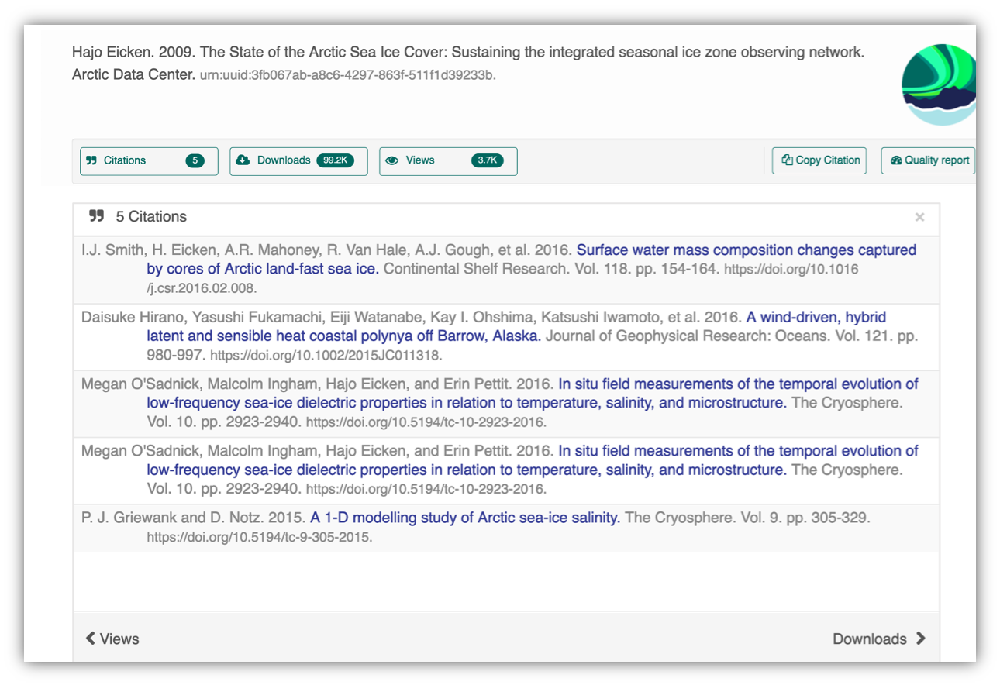
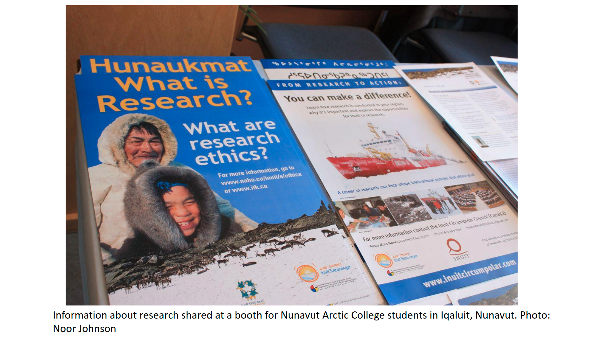
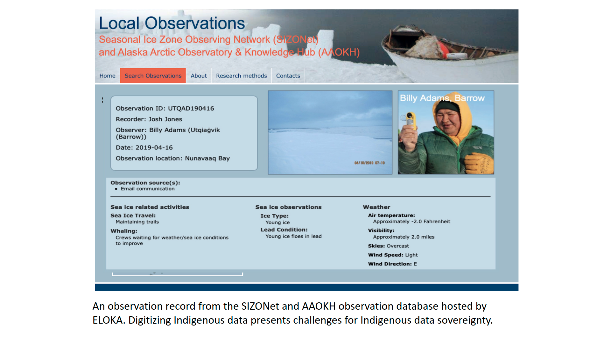
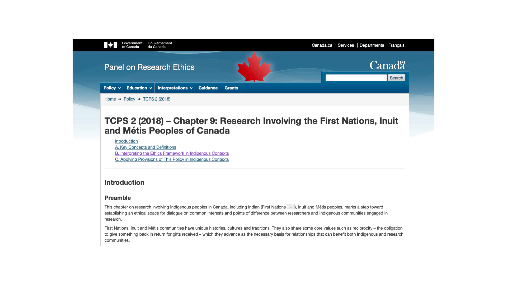
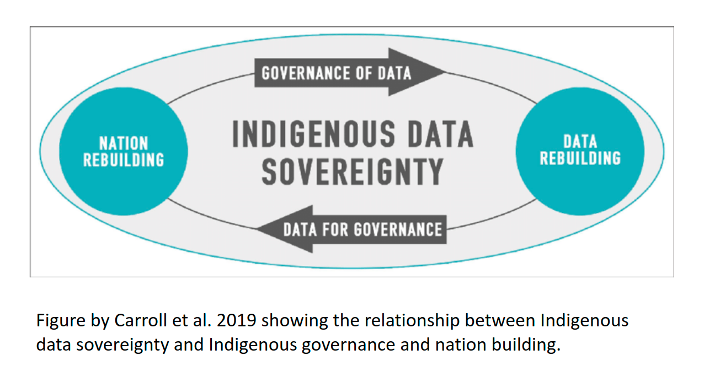

1 Session 1: Open Science Best Practices
1.1 Introduction to Reproducible Research
1.1.1 What is research reproducibility and how does it relate to open science?
Reproducibility is a hallmark of scientific research, which is based on empirical observations coupled with explanatory models. Whether integrating data from across multiple studies and sources, or working with your own data, the data life cycle typically involves some degree of data collection/integration, quality assurance practices, analysis and synthesis. Operating in a reproducible fashion means that each of these steps can be easily re-executed to achieve the same result, ideally as part of a single workflow.
Reproducibility means different things to different researchers. For our purposes, practical reproducibility looks like:
- Preserving the data
- Preserving the software workflow
- Documenting what you did
- Describing how to interpret it all
Reproducibility does not, by definition, require openness. Reproducibility can be achieved within a single research activity or across a research program with a closed group of collaborators. However, when working in an OPEN and REPRODUCIBLE manner, we are better able to transform knowledge into benefits for society. In this section we will expand on the benefits of reproducible research and open science before highlighting some best practices.
Why is reproducible research important?
Working in a reproducible manner builds efficiencies into your own research practices. The ability to automate processes and rerun analyses as you collect more data, or share your full workflow (including data, code and products) with colleagues, will accelerate the pace of your research and collaborations. However, beyond these direct benefits, reproducible research builds trust in science with the public, policy makers and others.

What data were used in this study? What methods applied? What were the parameter settings? What documentation or code are available to us to evaluate the results? Can we trust these data and methods?
Are the results reproducible?

Ionnidis (2005) contends that “Most research findings are false for most research designs and for most fields”, and a study of replicability in psychology experiments found that “Most replication effects were smaller than the original results” (Open Science Collaboration, 2015).

In the case of ‘climategate’, it took three years, and over 300 personnel, to gather the necessary provenance information in order to document how results, figures and other outputs were derived from input sources. Time and effort that could have been significantly reduced with appropriate documentation and reproducible practices. Moving forward, through reproducible research training, practices, and infrastructure, the need to manually chase this information will be reduced enabling replication studies and great trust in science.
1.1.2 Open Science
To enable full reproducibility by the broader community; researchers, practitioners, policy makers etc, all products of the research activity need to be accessible - open data, open code, and open publications. Further, full research transparency also requires open peer review. There are, of course, data sensitivities and ethical considerations regarding open everything and these will be discussed later.

At its core, the aims of Open Science are to:
- Increase transparency of the research process
- Enable reproducibility of results and conclusions
- Accelerate discovery
- Enhance and facilitate collaboration
- Increase diversity, equity and inclusion
- Transform knowledge into benefits for society
Computational reproducibility
Computational reproducibility is the ability to document data, analyses, and models sufficiently for other researchers to be able to understand and ideally re-execute the computations that led to scientific results and conclusions.
To be able to evaluate the data, analyses, and models on which conclusions are drawn, computational reproducibility requires open science approaches, including straightforward steps for archiving data and code openly along with the scientific workflows describing the provenance of scientific results (e.g., Hampton et al. (2015), Munafò et al. (2017)).
Scientific workflows encapsulate all of the steps from data acquisition, cleaning, transformation, integration, analysis, and visualization.

Workflows can range in detail from simple flowcharts to fully executable scripts. R scripts and python scripts are a textual form of a workflow, and when researchers publish specific versions of the scripts and data used in an analysis, it becomes far easier to repeat their computations and understand the provenance of their conclusions.
Computational reproducibility provides:
- transparency by capturing and communicating scientific workflows
- research to stand on the shoulders of giants (build on work that came before)
- credit for secondary usage and supports easy attribution
- increased trust in science
Preserving computational workflows enables understanding, evaluation, and reuse for the benefit of future you and your collaborators and colleagues across disciplines.
1.1.3 Community Principles: CARE and FAIR
In facilitating use of data resources, the community have converged on principles surrounding best practices for open data management. One set of these principles is the FAIR principles: Findable, Accessible, Interoperable, and Reproducible. FAIR principles and open science are overlapping, but distinct concepts. Open science supports a culture of sharing research outputs and data, and FAIR focuses on how to prepare the data.

Another set of community developed principles surrounding open data are the CARE Principles. The CARE principles for Indigenous Data Governance complement the more data-centric approach of the FAIR principles, introducing social responsibility to open data management practices. The CARE Principles stand for:
- Collective Benefit
- Authority to Control
- Responsibility
- Ethics

The CARE principles align with the FAIR principles by outlining guidelines for publishing data that is findable, accessible, interoperable, and reproducible while at the same time, accounts for Indigenous’ Peoples rights and interests. Initially designed to support Indigenous data sovereignty, CARE principles are now being adopted across domains, and many researchers argue they are relevant for both Indigenous Knowledge and data, as well as data from all disciplines (Carroll et al., 2021). These principles introduce a “game changing perspective” that encourages transparency in data ethics, and encourages data reuse that is purposeful and intentional that aligns with human well-being aligns with human well-being (Carroll et al., 2021).
These will be discussed more comprehensively during the data ethics section of the workshop.
1.1.4 Metadata Best Practices
Well structured and described data unpin the FAIR principles and we’ll visit how best to organize your data in a tidy and effective manner (in both theory and practice) shortly. Here we focus on metadata best practices.
Metadata (data about data) is an important part of the data life cycle because it enables data reuse long after the original collection. Imagine that you’re writing your metadata for a typical researcher (who might even be you!) 30+ years from now - what will they need to understand what’s inside your data files?
The goal is to have enough information for the researcher to understand the data, interpret the data, and then re-use the data in another study.
Another way to think about it is to answer the following questions with the documentation:
- What was measured?
- Who measured it?
- When was it measured?
- Where was it measured?
- How was it measured?
- How is the data structured?
- Why was the data collected?
- Who should get credit for this data (researcher AND funding agency)?
- How can this data be reused (licensing)?
Bibliographic Details
The details that will help your data be cited correctly are:
- a global identifier like a digital object identifier (DOI);
- a descriptive title that includes information about the topic, the geographic location, the dates, and if applicable, the scale of the data
- a descriptive abstract that serves as a brief overview off the specific contents and purpose of the data package
- funding information like the award number and the sponsor;
- the people and organizations like the creator of the dataset (ie who should be cited), the person to contact about the dataset (if different than the creator), and the contributors to the dataset
Discovery Details
The details that will help your data be discovered correctly are:
- the geospatial coverage of the data, including the field and laboratory sampling locations, place names and precise coordinates;
- the temporal coverage of the data, including when the measurements were made and what time period (ie the calendar time or the geologic time) the measurements apply to;
- the taxonomic coverage of the data, including what species were measured and what taxonomy standards and procedures were followed; as well as
- any other contextual information as needed.
Interpretation Details
The details that will help your data be interpreted correctly are:
- the collection methods for both field and laboratory data;
- the full experimental and project design as well as how the data in the dataset fits into the overall project;
- the processing methods for both field and laboratory samples IN FULL;
- all sample quality control procedures;
- the provenance information to support your analysis and modelling methods;
- information about the hardware and software used to process your data, including the make, model, and version; and
- the computing quality control procedures like any testing or code review.
Data Structure and Contents
Well constructed metadata also includes information about the data structure and contents. Everything needs a description: the data model, the data objects (like tables, images, matricies, spatial layers, etc), and the variables all need to be described so that there is no room for misinterpretation.
Variable information includes the definition of a variable, a standardized unit of measurement, definitions of any coded values (such as 0 = not collected), and any missing values (such as 999 = NA).
Not only is this information helpful to you and any other researcher in the future using your data, but it is also helpful to search engines. The semantics of your dataset are crucial to ensure your data is both discoverable by others and interoperable (that is, reusable).
Using an example from the natural sciences, if you were to search for the character string carbon dioxide flux in the general search box at the Arctic Data Center, not all relevant results will be shown due to varying vocabulary conventions (ie, CO2 flux instead of carbon dioxide flux) across disciplines — only datasets containing the exact words carbon dioxide flux are returned. With correct semantic annotation of the variables, your dataset that includes information about carbon dioxide flux but that calls it CO2 flux WOULD be included in that search.

Above left demonstrates a typical search for “carbon dioxide flux”, yielding 20 datasets. Above right illustrates an annotated search for “carbon dioxide flux”, yielding 29 datasets. Note that if you were to interact with the site and explore the results of the figure on the right, the dataset in red of Figure 3 will not appear in the typical search for “carbon dioxide flux.”
Rights and Attribution
Correctly assigning a way for your datasets to be cited and reused is the last piece of a complete metadata document. This section sets the scientific rights and expectations for the future on your data, like:
- the citation format to be used when giving credit for the data;
- the attribution expectations for the dataset;
- the reuse rights, which describe who may use the data and for what purpose;
- the redistribution rights, which describe who may copy and redistribute the metadata and the data; and
- the legal terms and conditions like how the data are licensed for reuse.
Ethical Data Practices
Additionally, at the Arctic Data Center, we now require data submissions to include information on the level of data sensitivity and to provide a statement of ethical research practice.
As the primary repository for the NSF Office of Polar Programs Arctic Section, the Arctic Data Center accepts data from all disciplines. This includes data from social science research that may include sensitive data. Sharing sensitive data can pose challenges to researchers, however sharing metadata or anonymized data contributes to discovery, supports open science principles, and helps reduce duplicate research efforts. To help mitigate the challenges of sharing sensitive data, researchers submitting data now have the option to choose between varying levels of sensitivity that best represent their dataset.

Within the research methods section, submitters are now asked to describe the ethical data practices used throughout their research. The information provided will be visible as part of the metadata record and this field has been added to encourage transparency in data ethics. Transparency in data ethics is a vital part of open science and sharing ethical practices encourages deeper discussion about data reuse and ethics.

So, how do you organize all this information? There are a number of metadata standards (think, templates) that you could use, including the Ecological Metadata Language (EML), Geospatial Metadata Standards like ISO 19115 and ISO 19139, the Biological Data Profile (BDP), Dublin Core, Darwin Core, PREMIS, the Metadata Encoding and Transmission Standard (METS), and the list goes on and on. The Arctic Data Center runs on EML and has a simple to use interface that guides you through the process of creating your metadata record.
1.1.5 Data Identifiers
Many journals require a DOI - a digital object identifier - be assigned to the published data before the paper can be accepted for publication. The reason for that is so that the data can easily be found and easily linked to.
At the Arctic Data Center, we assign a DOI to each published dataset. But, sometimes datasets need to be updated. Each version of a dataset published with the Arctic Data Center has a unique identifier associated with it. Researchers should cite the exact version of the dataset that they used in their analysis, even if there is a newer version of the dataset available. When there is a newer version available, that will be clearly marked on the original dataset page with a yellow banner indicating as such.

Having the data identified in this manner allows us to accurately track the dataset usage metrics. The Arctic Data Center tracks the number of citations, the number of downloads, and the number of views of each dataset in the catalog.

1.1.6 Data Citation
Data citation best practices are focused on providing credit where credit is due and indexing and exposing data citations across international repository networks. In 2014, Force 11 established a Joint Declaration of Data Citation Principles that includes:
- Importance of data citation
- Credit and Attribution
- Evidence
- Unique Identification
- Access
- Persistence
- Specificity and Verifiability
- Interoperability and Flexibility
Transitive Credit
We want to move towards a model such that when a user cites a research publication we will also know:
- Which data produced it
- What software produced it
- What was derived from it
- Who to credit down the attribution stack

This is transitive credit. And it changes the way in which we think about science communication and traditional publications.
Open Science, Reproducibilty and Computational Provenance
Computational provenance refers to the origin and processing history of data including:
- Input data
- Workflow/scripts
- Output data
- Figures
- Methods, dataflow, and dependencies
When we put these all together with formal documentation, we create a computational workflow that captures all of the steps from inital data cleaning and integration, through analysis, modeling, and visualization.
Here’s an example of a computational workflow from Mark Carls, that represents a three step workflow comprising four source data files and two output visualizations.


The screenshot of the dataset page shows how we render the workflow model information as part of an interactive user interface. You can clearly see which data files were inputs to the process, the scripts that are used to process and visualize the data, and the final output objects that are produced, in this case two graphical maps of Prince William Sound in Alaska.
From Provenance to Reproducibility
At the Arctic Data Center we facilitate open, reproducible science through provenance by:
- Tracking data derivation history
- Tracking data inputs and outputs of analyses
- Preserving and documenting software workflows
- Tracking analysis and model executions
- Linking all of these to publications
1.2 Tidy Data: Part 1
1.2.1 Learning Objectives
- Understand basics of relational data models aka tidy data
- Learn how to design and create effective data tables
1.2.2 Introduction
In this lesson we are going to learn what relational data models are, and how they can be used to manage and analyze data efficiently. Relational data models are what relational databases use to organize tables. However, you don’t have to be using a relational database (like mySQL, MariaDB, Oracle, or Microsoft Access) to enjoy the benefits of using a relational data model. Additionally, your data don’t have to be large or complex for you to benefit. Here are a few of the benefits of using a relational data model:
- Powerful search and filtering
- Handle large, complex data sets
- Enforce data integrity
- Decrease errors from redundant updates
Simple guidelines for data management
A great paper called ‘Some Simple Guidelines for Effective Data Management’ (Borer et al. 2009) lays out exactly that - guidelines that make your data management, and your reproducible research, more effective.
- Use a scripted program (like R!)
A scripted program helps to make sure your work is reproducible. Typically, point-and-click actions, such as clicking on a cell in a spreadsheet program and modifying the value, are not reproducible or easily explained. Programming allows you to both reproduce what you did, and explain it if you use a tool like Rmarkdown.
- Non-proprietary file formats are preferred (eg: csv, txt)
Using a file that can be opened using free and open software greatly increases the longevity and accessibility of your data, since your data do not rely on having any particular software license to open the data file.
- Keep a raw version of data
In conjunction with using a scripted language, keeping a raw version of your data is definitely a requirement to generate a reproducible workflow. When you keep your raw data, your scripts can read from that raw data and create as many derived data products as you need, and you will always be able to re-run your scripts and know that you will get the same output.
- Use descriptive file and variable names (without spaces!)
When you use a scripted language, you will be using file and variable names as arguments to various functions. Programming languages are quite sensitive with what they are able to interpret as values, and they are particularly sensitive to spaces. So, if you are building reproducible workflows around scripting, or plan to in the future, saving your files without spaces or special characters will help you read those files and variables more easily. Additionally, making file and variables descriptive will help your future self and others more quickly understand what type of data they contain.
- Include a header line in your tabular data files
Using a single header line of column names as the first row of your data table is the most common and easiest way to achieve consistency among files.
- Use plain ASCII text
ASCII (sometimes just called plain text) is a very commonly used standard for character encoding, and is far more likely to persist very far into the future than proprietary binary formats such as Excel.
The next three are a little more complex, but all are characteristics of the relational data model:
- Design tables to add rows, not columns
- Each column should contain only one type of information
- Record a single piece of data only once; separate information collected at different scales into different tables.
1.2.3 Recognizing untidy data
Before we learn how to create a relational data model, let’s look at how to recognize data that does not conform to the model.
Data Organization
This is a screenshot of an actual dataset that came across NCEAS. We have all seen spreadsheets that look like this - and it is fairly obvious that whatever this is, it isn’t very tidy. Let’s dive deeper in to exactly why we wouldn’t consider it tidy.

Multiple tables
Your human brain can see from the way this sheet is laid out that it has three tables within it. Although it is easy for us to see and interpret this, it is extremely difficult to get a computer to see it this way, which will create headaches down the road should you try to read in this information to R or another programming language.

Inconsistent observations
Rows correspond to observations. If you look across a single row, and you notice that there are clearly multiple observations in one row, the data are likely not tidy.


1.3 Open Data Ethics
Developed by the Exchange for Local Observations and Knowledge of the Arctic (ELOKA) and Navigating the New Arctic Community Office (NNA-CO).
1.3.1 Introduction
This part of the training offers an introduction to ethics in the context of open science. It was developed with input from ELOKA and the NNA-CO, and is a work-in-progress – this is the first time we are offering this training. The training introduces ethics issues in a broad way and includes discussion of social science data and open science, but the majority of the section focuses on issues related to research with, by, and for Indigenous communities. We recognize that there is a need for more in-depth training and focus on open science for social scientists and others who are not engaging with Indigenous Knowledge holders and Indigenous communities, and hope to develop further resources in this area in the future. Many of the data stewardship practices that have been identified as good practices through Indigenous Data Sovereignty framework development are also relevant for those working with Arctic communities that are not Indigenous, although the rights frameworks and collective ownership is specific to the Indigenous context.
The examples we include in this training are primarily drawn from the North American research context. In future trainings, we plan to expand and include examples from other Indigenous Arctic contexts. We welcome suggestions and resources that would strengthen this training for audiences outside of North America.
We also recognize the importance of trainings on Indigenous data sovereignty and ethics that are being developed and facilitated by Indigenous organizations and facilitators. In this training we offer some introductory material but there is much more depth offered in IDS specific trainings. We include some suggestions of organizations offering further training in the “resources” section and encourage participants to seek out these opportunities to deepen their understanding. And there are several sessions this week with some of the authors of the frameworks and protocols that will be discussed, including:
- Maui Hudson (Indigenous Data Sovereignty): Community-Driven
Observations and Indigenous Perspectives (Wednesday, March 30)
- Jane Anderson (Local Contexts/TK labels): Data Sharing (Thursday, March 31)
1.3.2 Equity issues in open science

Arctic communities (defined as a place and the people who live there, based on geographic location in the Arctic/sub-Arctic) are involved in research in diverse ways - as hosts to visiting or non-local researchers, as well as “home” to community researchers who are leading or collaborating on research projects. Over the past decades, community voices of discontent with standard research practices that are often exclusive and perpetuate inequities have grown stronger. The Arctic research community (defined more broadly as the range of institutions, organizations, researchers and local communities involved in research) is in the midst of a complex conversation about equity in research aimed at transforming research practice to make it more equitable and inclusive.
One of the drivers of community concerns is the colonial practice of extracting knowledge from a place or group of people without respect for local norms of relationship with people and place, and without an ethical commitment to sharing and making benefits of knowledge accessible and accountable to that place. Such approaches to knowledge and data extraction follow hundreds of years of exploration and research that viewed science as a tool of “Enlightenment” yet focused exclusively on benefits to White, European (or “southern” from an Arctic community perspective) researchers and scientists. This prioritization of non-local perspectives and needs (to Arctic communities) continues in Arctic research.
One result of this approach to research has been a lack of access for Arctic residents to the data and knowledge that have resulted from research conducted in their own communities. Much of this data was stored in the personal files or hard drives of researchers, or in archives located in urban centers far from the Arctic.
Open science is ostensibly about making access to data and knowledge more equitable and open and enabling reproducible research. These are laudable goals and on the surface, could provide a counterbalance to traditional approaches that limited Arctic community members’ access to research data and knowledge. Because it is being implemented within a social and institutional context that continues to perpetuate inequities in research, however, there are significant challenges remaining to ethically and equitably implementing open science practices.
Here are some examples of impediments to ethical and equitable implementation of open science:
Many Open Science tools and practices (e.g. GitHub, non-proprietary software) have been adopted from software development, and are not familiar to many, even physical, scientists. This makes barriers to implementation of open science and participation in open science practices higher for some than for others.
Some of the main focus areas of open science (making sure data is archived in a clean and reusable format, open access publication) are still not accessible for Arctic residents and others who are not already situated within an academic environment. Open science assumes access to tools and infrastructure, such as computers that have reliable and low-cost or subsidized internet access.
These structural inequalities extend even within the academy. Researchers and academics based in lower-income countries have fewer provided resources and sources of support to pay for open access fees and face greater challenges in adopting open science practices.
- The emphasis of open science on stakeholder and rights holder engagement and knowledge co-production also creates unintended challenges for Arctic communities. For example, when the National Science Foundation’s Navigating the New Arctic initiative, which brought millions of additional funds to Arctic research, suggested that research projects incorporate co-production and collaboration with Arctic communities, community representatives reported being inundated with requests from researchers. Perhaps because NNA was designed, in part, to bring new researchers and disciplines into Arctic research, many of these requests were made without adequate regard for recognized good practices for community engagement (such as the importance of building relationships, reaching out very early for input; communicating “early and often;” and incorporating significant resources for community participants’ time and knowledge into project budgets, among other things). As a letter to NSF written by Kawerak, the Association of Village Council Presidents, the Aleut Community of St. Paul Island, and the Bering Sea Elders Group emphasized, without adequate attention to these practices as well as an emphasis on topics that communities have identified as important, research will not serve community partners and will fail to achieve its broader impact goals. (See also the 2021 update letter from the same organizations).
1.3.4 Open (and other) data challenges for Indigenous Peoples

The introduction of open data requirements has raised concerns about how open data objectives such as making data freely available for use and reuse may conflict with Indigenous Data Sovereignty and the right of Indigenous peoples to govern their data (Rainie et al. 2019: 301). Stephanie Carroll (formerly Rainie) and colleagues (2019) have summarized some of the data challenges for Indigenous Peoples, including:
Data collection invisibility and bias
Insufficient involvement of Indigenous Peoples in broader decisions/discussions about data governance, including decisions about what data is collected, when, how, and by whom, as well as involvement in global data governance bodies.
Even if Indigenous peoples are not part of data collection, if the data is collected on Indigenous lands and could be used to support decisions that impact these lands, animals, or Indigenous peoples, they should be part of decision-making about that data.
Data access, use, and interpretation, including:
Insufficient availability of data about Indigenous peoples - gaps in national data collection
Challenges in data access (infrastructure and training); accessing and utilizing data from multiple sources given time and staffing limitations (McBride N.D.)
Data collected from a “deficit” lens - reinforces perception of dysfunction, leading to bias and misrepresentation.
Open data movement prioritizes making data available for reuse. However, there are concerns about secondary analysis of Indigenous data given the importance of context to understanding/interpreting Indigenous data and emphasis on building and maintaining relationships in Indigeous research (Burrage 2021).
Important for researchers generating data that they hope will be useful to Indigenous communities to be aware of ethical frameworks for working with/sharing data and partnering with communities.
Data ownership and appropriation
Digitization of data/“big data” - the context surrounding data is often very important to Indigenous Knowledge and data. The digitization of data raises concerns about how and to what extent this context can be preserved.
Individual vs. collective rights. Data ownership is often focused on individual rights (both in protection of sensitive data as well as in intellectual property rights), while Indigenous peoples have both individual and collective rights in relation to data.
All requests for data contributions, clarification, or informational resources are requests for collaboration and should be treated with the same level of importance as larger projects (Murphy 2019).
1.3.5 The role of IRBs, funding agencies, and Indigenous data
In the United States, Institutional Review Boards (IRBs; in Canada they are referred to as Research Ethics Boards or REBs) focus on ensuring ethical treatment and protection of research subjects with a particular focus on vulnerable populations and ethical management of data. For projects proposing research that involves Indigenous peoples in the United States, IRBs will often refer the review to Tribal IRBs, which are research review boards established and implemented directly by Tribal Nations. Tribal IRBs reflect and respond to community needs, changes in research, and revisions to research policy (Around Him et al. 2019). Oversight mechanisms range from federally registered review bodies and policy development to community-specific frameworks and approaches (see Around Him et al. 2019 for differentiation, justification and authority).

In addition to IRB review, universities require ethics training for researchers who are doing research with human subjects, including Indigenous Peoples. Many universities use the web-based, third-party CITI training program, which offers different short courses. A basic training course for social and behavioral science researchers covers the history of ethical misconduct in research, how human subjects research is defined, federal regulations that govern research practice, assessing risk, informed consent, privacy and confidentiality, and ethics requirements for different categories of vulnerable populations including prisoners and children. While the CITI human subjects trainings touch on topics related to Indigenous peoples, they are not at all comprehensive. A CITI webinar, “Research with Native American Communities: Important Considerations when Applying Federal Regulations” introduces more topics. The r-ETHICS training (Ethics Training for Health in Indigenous Communities Study) is starting to become an acceptable, recognizable CITI addition for IRB training by tribal entities.
Specific universities have adopted tribal consultation policies (such as the Arizona Board of Regents’ (ABOR) Tribal Consultation policy (1-118) adopted in 2016; University of Wisconsin System Board of Regents tribal consultation policy adopted in 2021; Washington State University EP 41 adopted in 2021). These policies highlight where consultation is expected/required and what the process should be (Marley 2019).
In the United States, the Inter-Agency Arctic Research Policy Committee has established the Principles for Conducting Research in the Arctic (2018) with input from the Arctic research community, which are:
- Be Accountable
- Establish Effective Communication
- Respect Indigenous Knowledge and Cultures
- Build and Sustain Relationships
- Pursue Responsible Environmental Stewardship
IRBs are not necessarily aware of these principles but national funding agencies may use them to inform proposal reviewers about expectations for research projects that work with Arctic communities.

In Canada, funding agencies have established the Tri-Council Policy Statement on Ethical Conduct for Research Involving Humans; Chapter 9 focuses on research involving First Nations, Inuit and Metis. The chapter points to the importance of addressing issues regarding access to data and use of data with involved communities and suggests using a research agreement to establish any limits on data use and sharing, provisions to offer the opportunity for research participants and collaborators to review reports and publications prior to dissemination/publication, and to include provisions for any anticipated secondary use of information.
The Tri-Council Statement has resulted in direct modifications to institutional-level REB (Canada) processes and procedures, such as incorporation of dedicated sections focusing on Indigenous research ethics within University protocols. For example, the “Indigenous Peoples and Community Engagement” section of an REB application at a Canadian university asks researchers to “Describe arrangements for the participating community’s/ies’ ownership and/or sharing of project data and findings, including the OCAP principles” (see below for more on OCAP).
1.3.6 Indigenous data governance and sovereignty

All governing entities, whether national, state, local, or tribal, need access to good, current, relevant data in order to make policy, planning, and programmatic decisions. Indigenous nations and organizations have had to push for data about their peoples and communities to be collected and shared in ethical and culturally appropriate ways, and they have also had to fight for resources and capacity to develop and lead their own research programs.
1.3.6.1 Indigenous data definitions:
Indigenous data sovereignty “…refers to the right of Indigenous peoples to govern the collection, ownership, and application of data about Indigenous communities, peoples, lands, and resources (Rainie et al. 2019). These governance rights apply “regardless of where/by whom data is held (Rainie et al. 2019).
Some Indigenous individuals and communities have expressed dissatisfaction with the term “data” as being too narrowly focused and abstract to represent the embedded and holistic nature of knowledge in Indigenous communities. Knowledge sovereignty is a related term that has a similar meaning but is framed more broadly, and has been defined as:
“Tribal communities having control over the documentation and production of knowledge (such as through research activities) which relate to Alaska Native people and the resources they steward and depend on” (Kawerak 2021).
Indigenous data is “data in a wide variety of formats inclusive of digital data and data as knowledge and information. It encompasses data, information, and knowledge about Indigenous individuals, collectives, entities, lifeways, cultures, lands, and resources.” (Rainie et al. 2019)
Indigenous data governance is “The entitlement to determine how Indigenous data is governed and stewarded” (Rainie et al. 2019)
1.3.7 IDS Frameworks
There has been increasing emphasis on development of frameworks to support ethical research and data stewardship grounded in Indigenous understandings and world views. The emergence of national and global networks focusing on Indigenous data sovereignty has supported the development of some of these frameworks. For example, the Global Indigenous Data Alliance (GIDA) developed the CARE principles in response to the emergence of the FAIR principles. CARE is a set of high-level principles that are broad enough to encompass more specific frameworks and principles developed by International and national Indigenous networks, organizations, and Tribes. This alliance is supported by three national networks, the United States Indigenous Data Sovereignty Network (USIDSN), Te Mana Raraunga Maori Data Sovereignty Network, and the Maiam nayri Wingara Aboriginal and Torres Strait Islander Data Sovereignty Collective. The latter networks each have worked within their respective national contexts to develop IDS principles at a “mid-level.”
These frameworks are being developed at different governance levels, from “high level” frameworks that are global in scale and therefore more general to mid-level frameworks that are developed at a national scale or by a subset of Indigenous Peoples/Nations (such as circumpolar Inuit or Inuit within the national level in Canada), to foundational level frameworks that are developed at the Tribal or community scale.
It is important for researchers to be aware of the different frameworks that can inform and guide ethical research practice and data management. Frameworks developed at the high or mid-level do not replace foundational frameworks. In the absence of a written framework at the tribal/community scale, the practices of strong consultation and engagement outlined in mid-level frameworks can help inform the development of an ethical approach.

High level frameworks in support of IDS:
The UN Declaration on the Rights of Indigenous Peoples, which recognizes the collective rights of Indigenous peoples. Article 18 of UNDRIP recognizes the right of Indigenous Peoples to participate in decision-making about matters that affect their rights; Article 19 recognizes the requirement for states to consult and cooperate with Indigenous Peoples to gain their Free Prior and Informed Consent on legislation that affects them. Other international protocols such as Nagoya Protocol on access and benefit sharing and the Cartagena Protocol on Biosafety (UNCBD) also recognize Indigenous rights with reference to intellectual property and the right to benefit from Indigenous knowledge and data as the owners/stewards of that data.
CARE principles were developed to accompany the FAIR Principles and guide their implementation in relation to Indigenous data in a way that is “people and purpose oriented.” They were developed by the RDA International Indigenous Data Sovereignty Interest Group and released by the Global Indigenous Data Alliance in September 2019. The CARE Principles stand for:
- Collective Benefit - Data ecosystems shall be designed and function in ways that enable Indigenous Peoples to derive benefit from the data for:
- Inclusive development/innovation
- Improved governance and citizen engagement
- Equitable outcomes
- Inclusive development/innovation
- Authority to Control - Indigenous Peoples’ rights and interests in Indigenous data must be recognised and their authority to control such data be empowered. Indigenous data governance enables Indigenous Peoples and governing bodies to determine how Indigenous Peoples, as well as Indigenous lands, territories, resources, knowledges and geographical indicators, are represented and identified within data.
- Recognizing Indigenous rights (individual and collective) and interests
- Data for governance
- Governance of data
- Responsibility - Those working with Indigenous data have a responsibility to share how those data are used to support Indigenous Peoples’ self-determination and collective benefit. Accountability requires meaningful and openly available evidence of these efforts and the benefits accruing to Indigenous Peoples.
- For positive relationships
- For expanding capability and capacity (enhancing digital literacy and digital infrastructure)
- For Indigenous languages and worldviews (sharing data in Indigenous languages)
- Ethics - Indigenous Peoples’ rights and wellbeing should be the primary concern at all stages of the data life cycle and across the data ecosystem.
- Minimizing harm/maximizing benefit - not using a “deficit
lens” that conceives of and portrays Indigenous communities as
dysfunctional, lacking solutions, and in need of
intervention. For researchers, adopting a deficit lens can
lead to collection of only a subset of data while excluding
other data and information that might identify solutions,
innovations, and sources of resilience from within Indigenous
communities. For policy makers, a deficit lens can lead to
harmful interventions framed as “helping.”
- For justice - addressing power imbalances and equity
- For future use - acknowledging potential future use/future harm. Metadata should acknowledge provenance and purpose and any limitations in secondary use inclusive of issues of consent.
- Minimizing harm/maximizing benefit - not using a “deficit
lens” that conceives of and portrays Indigenous communities as
dysfunctional, lacking solutions, and in need of
intervention. For researchers, adopting a deficit lens can
lead to collection of only a subset of data while excluding
other data and information that might identify solutions,
innovations, and sources of resilience from within Indigenous
communities. For policy makers, a deficit lens can lead to
harmful interventions framed as “helping.”
- Collective Benefit - Data ecosystems shall be designed and function in ways that enable Indigenous Peoples to derive benefit from the data for:
The CARE principles were developed in relation to the FAIR principles to add an ethical framework for open data, as expressed in the phrase #BeFAIRandCARE. Although they focus on Indigenous data, they are broadly relevant to other types of data, recognizing the rights of different communities to control and access data by/for/about them (Carroll et al., 2021). Complementarity and disconnect between the FAIR and CARE principles and Open Data Charter have been discussed by participants in the open data community (Stone & Calderon 2019). While FAIR and CARE are complementary, CARE has some overlap with the ODC as well as a point of tension in relation to the ODC value of making data “open by default” (Carroll et al. 2020). Stephanie Carroll and colleagues suggest that the implementation of CARE can help clarify and refine the intent of “open by default,” which could be defined in a way that also upholds Indigenous data rights (Carroll et al. 2020).
Mid-level frameworks:
- The First Nations Principles of OCAP (ownership, control, access, possession). Developed by the First Nations Information Governance Centre, which has developed good educational materials explaining the principles and how to implement them, as well as a training course (available on their website; the class has a registration fee).
- Inuit Circumpolar Council’s Ethical and Equitable Engagement Synthesis. This synthesis summarizes the process and approach that ICC took to develop principles of ethical and equitable engagement for Inuit, which involved broad engagement and input from Inuit in Alaska, Canada, Greenland, and Chukotka. ICC is working on a full set of principles, which will be released after they have gone through review.
- National Inuit Strategy on Research. Developed by Inuit Tapiriit Kanatami, the National Inuit Organization of Canada, with input from the Inuit regions of northern Canada. The research strategy discusses Indigenous data sovereignty.
- In Alaska, the Alaska Native Knowledge Center developed Guidelines for Respecting Cultural Knowledge. These include specific guidelines for authors and illustrators, curriculum developers and administrators, educators, editors and publishers, document reviewers, researchers, native language specialists, native community organizers, and the general public.
- Principles of Māori Data Sovereignty (Te Mana Rararunga) - Developed by the Maori Data Sovereignty Network (Maui Hudson is a founding member of this network).
- Maiam nayri Wingara key principles developed by the Maiam nayri Wingara Aboriginal and Torres Strait Islander Data Sovereignty Collective.
Foundational level frameworks:

Tribal or community-level expectations/frameworks - such as Native Village of Kotzebue’s Research Protocol (Whiting 2022), which requests that researchers follow ethical research practices pertaining to informed consent and:
- Inform the Tribe of plan to research and continue to inform them after permission has been granted;
- Consult with the Tribe in project development, implementation and planning.
- Explain the purposes, goals, time frame, and methodology of the
research, including the sponsoring institutions and
affiliations of the research project and identify the person in
charge, as well as all investigators involved in the research,
and the need for consultants, guides, or interpreters and
proposed compensation rates for same
- Share results with the Tribe in non-technical language
- Give credit to those contributing to the research project by acknowledging the Intellectual Property Rights of individual Tribal citizens taking part in the research (unless there are requirements for anonymity)
- Recognize that all information belongs to the Tribe and divulgence of such information is expressly forbidden without permission of the Tribe;
- Compensate Indigenous Knowledge holders fairly for sharing their knowledge.
1.3.8 Discussion questions:
What do you see as the benefits to your research (or to Arctic research more generally) from applying the frameworks discussed today? What do you see as the major impediments to adopting these frameworks in the context of open science? How might you navigate these conflicts within your own research project(s)?
1.3.8.1 Resources
Trainings:
Fundamentals of OCAP (online training - for working with First Nations in Canada): https://fnigc.ca/ocap-training/take-the-course/
Native Nations Institute trainings on Indigenous Data Sovereignty and Indigenous Data Governance: https://igp.arizona.edu/jit
The Alaska Indigenous Research Program, is a collaboration between the Alaska Native Tribal Health Consortium (ANTHC) and Alaska Pacific University (APU) to increase capacity for conducting culturally responsive and respectful health research that addresses the unique settings and health needs of Alaska Native and American Indian People. The 2022 program runs for three weeks (May 2 - May 20), with specific topics covered each week. Week two (Research Ethics) may be of particular interest. Registration is free.
The r-ETHICS training (Ethics Training for Health in Indigenous Communities Study) is starting to become an acceptable, recognizable CITI addition for IRB training by tribal entities.
Kawerak, Inc and First Alaskans Institute have offered trainings in research ethics and Indigenous Data Sovereignty. Keep an eye out for further opportunities from these Alaska-based organizations . On open science and ethics:
ON-MERRIT recommendations for maximizing equity in open and responsible research https://zenodo.org/record/6276753#.YjjgC3XMLCI
https://link.springer.com/article/10.1007/s10677-019-10053-3
https://sagebionetworks.org/in-the-news/on-the-ethics-of-open-science-2/
Arctic social science and data management:
Arctic Horizons report: Anderson, S., Strawhacker, C., Presnall, A., et al. (2018). Arctic Horizons: Final Report. Washington D.C.: Jefferson Institute. https://www.jeffersoninst.org/sites/default/files/Arctic%20Horizons%20Final%20Report%281%29.pdf
Arctic Data Center workshop report: https://arcticdata.io/social-scientific-data-workshop/
Arctic Indigenous research and knowledge sovereignty frameworks, strategies and reports:
Kawerak, Inc. (2021) Knowledge & Research Sovereignty Workshop May 18-21, 2021 Workshop Report. Prepared by Sandhill.Culture. Craft and Kawerak Inc. Social Science Program. Nome, Alaska.
Inuit Circumpolar Council’s Ethical and Equitable Research Protocols Inuit Tapiriit Kanatami National Inuit Strategy on Research
Indigenous Data Governance and Sovereignty:
McBride, K. Data Resources and Challenges for First Nations Communities. Document Review and Position Paper. Prepared for the Alberta First Nations Information Governance Centre.
Carroll, S.R., Garba, I., Figueroa-Rodríguez, O.L., Holbrook, J., Lovett, R., Materechera, S., Parsons, M., Raseroka, K., Rodriguez-Lonebear, D., Rowe, R., Sara, R., Walker, J.D., Anderson, J. and Hudson, M., 2020. The CARE Principles for Indigenous Data Governance. Data Science Journal, 19(1), p.43. DOI: http://doi.org/10.5334/dsj-2020-043
Kornei, K. (2021), Academic citations evolve to include Indigenous oral teachings, Eos, 102, https://doi.org/10.1029/2021EO210595. Published on 9 November 2021. Kukutai, T. & Taylor, J. (Eds.). (2016). Indigenous data sovereignty: Toward an agenda. Canberra: Australian National University Press. See the editors’ Introduction and Chapter 7.
Kukutai, T. & Walter, M. (2015). Indigenising statistics: Meeting in the recognition space. Statistical Journal of the IAOS, 31(2), 317–326.
Marley TL. Indigenous Data Sovereignty: University Institutional Review Board Policies and Guidelines and Research with American Indian and Alaska Native Communities. American Behavioral Scientist. 2019;63(6):722-742. doi:10.1177/0002764218799130
Miaim nayri Wingara Indigenous Data Sovereignty Collective and the Australian Indigenous Governance Institute. (2018). Indigenous data sovereignty communique. Indigenous Data Sovereignty Summit, 20 June 2018, Canberra. http://www.aigi.com.au/wp-content/uploads/2018/07/Communique-Indigenous-Data-Sovereignty-Summit.pdf
National Congress of American Indians. (2018). Resolution KAN-18-011: Support of US Indigenous data sovereignty and inclusion of tribes in the development of tribal data governance principles. http://www.ncai.org/attachments/Resolution_gbuJbEHWpkOgcwCICRtgMJHMsUNofqYvuMSnzLFzOdxBlMlRjij_KAN-18-011%20Final.pdf
Rainie, S., Kukutai, T., Walter, M., Figueroa-Rodriguez, O., Walker, J., & Axelsson, P. (2019) Issues in Open Data - Indigenous Data Sovereignty. In T. Davies, S. Walker, M. Rubinstein, & F. Perini (Eds.), The State of Open Data: Histories and Horizons. Cape Town and Ottawa: African Minds and International Development Research Centre. https://zenodo.org/record/2677801#.YjqOFDfMLPY Schultz, Jennifer Lee, and Stephanie Carroll Rainie. 2014. “The Strategic Power of Data : A Key Aspect of Sovereignty.” 5(4). Trudgett, Skye, Kalinda Griffiths, Sara Farnbach, and Anthony Shakeshaft. 2022. “A Framework for Operationalising Aboriginal and Torres Strait Islander Data Sovereignty in Australia: Results of a Systematic Literature Review of Published Studies.” eClinicalMedicine 45: 1–23.
IRBs/Tribal IRBs:
Around Him D, Aguilar TA, Frederick A, Larsen H, Seiber M, Angal J. Tribal IRBs: A Framework for Understanding Research Oversight in American Indian and Alaska Native Communities. Am Indian Alsk Native Ment Health Res. 2019;26(2):71-95. doi: 10.5820/aian.2602.2019.71. PMID: 31550379.
Kuhn NS, Parker M, Lefthand-Begay C. Indigenous Research Ethics Requirements: An Examination of Six Tribal Institutional Review Board Applications and Processes in the United States. Journal of Empirical Research on Human Research Ethics. 2020;15(4):279-291. doi:10.1177/1556264620912103
Marley TL. Indigenous Data Sovereignty: University Institutional Review Board Policies and Guidelines and Research with American Indian and Alaska Native Communities. American Behavioral Scientist. 2019;63(6):722-742. doi:10.1177/0002764218799130
Ethical research with Sami communities:
Eriksen, H., Rautio, A., Johnson, R. et al. Ethical considerations for community-based participatory research with Sami communities in North Finland. Ambio 50, 1222–1236 (2021). https://doi.org/10.1007/s13280-020-01459-w
Jonsson, Å.N. Ethical guidelines for the documentation of árbediehtu, Sami traditional knowledge. In Working with Traditional Knowledge: Communities, Institutions, Information Systems, Law and Ethics. Writings from the Árbediehtu Pilot Project on Documentation and Protection of Sami Traditional Knowledge. Dieđut 1/2011. Sámi allaskuvla / Sámi University College 2011: 97–125. https://samas.brage.unit.no/samas-xmlui/bitstream/handle/11250/177065/Diedut-1-2011_AasaNordinJonsson.pdf?sequence=8&isAllowed=y
1.4 Community Data
1.4.1 Introduction
In this section of the training, we focus on tools and approaches for ethically managing community data in research projects and community collaborations.
Community data can be defined broadly as any data that a community feels a sense of investment in or ownership of (Johnson et al. 2021; Pulsifer et al. 2012). (In this workshop, we are using the term “community” to refer to a geographic place and the people who live there).
Community data may include:
- data produced by community-engaged or led research projects;
- data collected by external researchers that is about or relevant to
a community or the people who live there;
- or data or information needed to guide local decision-making and planning.
How does management of community data differ from traditional academic approaches to data management? While many of the tools (such as data management plans) are similar, community data management is guided by ethical considerations and protocols discussed in the “data ethics” part of this training. It has been said that data management is not primarily technical but social; ethical management of community data requires significant attention to the processes of meaningful collaboration needed to build and maintain relationships with communities. Community data management also requires an understanding of the governance context, including ethics protocols. In addition, building capacity and support for community control of data is an important aspect of community data management. ELOKA refers to these three aspects (governance/application of tools/capacity building) as comprising a “community data management system.”
1.4.2 Tools and Approaches for Stewardship of Community Data
1.4.2.1 Memorandum of Understanding (MOU)
An MOU is a formal agreement between two or more parties that documents the nature of the relationship and collaboration and puts into writing specific expectations regarding data management and data ownership. Although they are not legally binding, they are formal agreements to coordinate activities and as such, Universities may require legal counsel to review an MOU. An MOU may be most useful when a community or Tribe and a research program or institution want to lay out terms for ongoing collaboration beyond the timeframe of a single project, although sometimes a more formal agreement may be helpful to establish clear expectations for cooperation at the project level.
Some resources and templates for developing an MOU:
Memorial University. Indigenous Research Agreement Template.
Liboiron, M. “Template of Memorandum of Understanding for Mutual Aid Research in Disasters.” Template/resource designed with “mutual-aid researcher-community or academic-activist partnerships in mind.”
Colorado Nonprofit Association. 2003. Collaboration Toolkit: Creating an MOU.
Indigenous Works, “Building a Memorandum of Understanding” - includes template:
Karuk Tribe. “Memorandum of Mutual Understandings.” (Approved to be shared as a resource through the Sustainable Heritage Network).
1.4.2.2 Data Management Plan (DMP)
A DMP is a document used to describe the strategies and tools you will use to manage your data through different stages in the research lifecycle, including data collection, documentation & metadata, storage and backup, sharing & reuse, and preservation. The DMP includes plans for managing data both during active research as well as after the project is complete. DMPs include information about:
- what data will be created
- what policies will apply to the data
- who will own and have access to the data
- what data management practices will be used
- what facilities and equipment will be required
- who will be responsible for each of these activities.
https://dmptool.org/ is a free, online tool developed by the California Digital Library to guide development of DMPs. The template is customizable based on the funder that the plan will be submitted to. They maintain a list of funder requirements as well as a list of public plans from other projects - you can search them by keyword, funder, institution, language, and subject. (At the time of this training, a keyword search for “Indigenous” had only one result). The tool does not (yet?) incorporate IDS/CARE principles. A similar tool, DMPonline, is available from the Digital Curation Centre.
A data management plan should be developed during the planning phase of a research project. Many funders explicitly require a data management plan as part of a funding proposal. As a result, DMPs are often put together in haste to meet a proposal deadline without a lot of thought about ethical management of data. These DMPs are then often set aside without a lot more thought, and as a result there is a missed opportunity to use DMPs to deeply consider data as one of the major legacies of a research project, with the potential to “live” well beyond the duration of the research project. In the context of collaborative research, data sharing and use have the potential to create friction when they are viewed as supplementary rather than integral to good project planning and implementation.
Some elements of a DMP for co-produced research or research involving Indigenous Knowledge:
- When Indigenous data is involved or when activities will be
undertaken on or near Indigenous lands/waters, or when the data
generated is relevant to Indigenous governance, the plan should
include a discussion of Indigenous data sovereignty.
- This should include a statement of overall intent as well as a
careful review of proposed activities to ensure that they uphold
IDS principles, with reference to the relevant ethical guidelines
including any foundational or mid-level frameworks as well as the
CARE principles.
- The foundational guidelines at the Tribal or community level, if
available, should serve as the primary resource for ethical data
management.
- To be effective in the context of collaborative research, DMPs should be revisited at different stages of the project to make sure that all collaborators still feel comfortable with plans based on how the project has evolved.
Case Study
The Aboriginal and Torres Strait Islander Data Archive (ATSIDA) suggests that researchers working in the field of Australian Indigenous Studies ask and answer (collaboratively with communities) the following questions as part of data management planning (also relevant to the Arctic community and Indigenous context):
- Do the participants want the data preserved?
- Does any data need to be attributed to Traditional Knowledge holders?
- What are the access and use constraints for data deposited?
- How do I manage requests for re-use?
- Do I need to make the data anonymous?
- Can I publish the material online?
- If material is closed to public access, how long for?
- Do I need to dispose of any research data? If so, have I deleted it adequately without leaving a digital footprint? (Gardiner and Thorpe 2014)
1.4.2.3 Data Use Agreement
A data use agreement is a tool that asks users to agree to specific requirements for use, such as providing context for the data, citing the data in a certain way, and recognizing the rights of Indigenous knowledge holders. For example, the SIZONet/AAOKH database, a digital database of community contributed observations about the coastal environment in Alaska, includes a use agreement that provides a citation for the dataset and asks users to acknowledge the individual observer as well as review a paper providing additional context. In order to access the observations, an atlas user must confirm that they will abide by these use terms.
1.4.2.4 Data Citation
Giving proper recognition to the knowledge and data contributed by Indigenous communities and Knowledge holders is an important part of ethical data management. When Indigenous data or community data is shared in a digital format, for example in an online atlas or database, it should be accompanied by a suggested citation, which will help those who access and use the data provide the proper credit.
- Like all data citations, it should include a persistent identifier,
such as a DOI. Data repositories will often assist with securing a
DOI for a dataset when it is deposited.
- To address the challenges of providing context, the citation could be accompanied by a user guide that includes additional information that could be useful to understand or interpret the data/knowledge.
Lorisia McLeod of the James Smith Cree Nation developed templates for citing Indigenous Elders and Knowledge Keepers in APA and MLA format (Kornei 2021; McLeod 2021). The templates include the name of the knowledge holder/keeper, nation/community, treaty territory (if applicable), city/community they live in (if applicable), a brief description or title of the teaching, personal communication (for the APA template) and date (McLeod 2021).
For digital data, this could be combined with additional information that is commonly used in developing a data citation, such as:
- Release date (for a complete dataset)
- Formal title of the dataset
- Version of the dataset (if updates are planned)
- Format of the data (physical format the data is in)
- Archive or distributor (location where the dataset is held)
1.4.2.5 Metadata
Metadata supports data discovery, retrieval and reuse. When data are made available for use, metadata provides a structured record that allows users to locate data and understand how to use or interpret it. Metadata records might contain information about how and where the data or knowledge was collected and by whom, the storage file type and how the data is organized.
Metadata questions to consider (from University of Michigan Library Research Guide):
- What contextual details (metadata) are needed to make your data meaningful?
- What form or format will the metadata describing your data take?
Which metadata University of Michigan Library Research Guild
standards will you use? If there is no applicable standard, how
will you describe your data in a way that will make them accessible
to others?
- How will metadata files be generated for each of the data sets that
you produce? Who will do the work of data description and how will
the costs be borne?
- Who on your team will be responsible for ensuring that metadata standards are followed and are correctly applied to the corresponding data sets?
Except when efforts have been made to update metadata, much of the metadata that describes Indigenous data in museum and library collections uses outdated and racist terminology such as names that were applied to Indigenous Peoples without their consent. There have been a number of efforts within the library and archival communities to describe these challenges and develop approaches to address them. For example the “Use Our Words” Toolkit by Lauren Bourdages and Kassandra Caporiccio provides an approach to reviewing metadata in library and archive collections to decolonize the subject terms used to describe collections, replacing problematic terms with ones that have been approved by Indigenous communities.
Metadata standards establish a common way of structuring and understanding data. For Indigenous data, metadata description standards need to have some flexibility so that communities can determine what classes and terms should be used (Murphy 2019). Metadata are information sources so IDS guidelines apply to metadata - it is important to collaborate fully on metadata development with Indigenous community partners (Kukutai & Taylor). To give an example of how this was applied in a project context: The Atlas of Community-Based Monitoring in a Changing Arctic (arcticcbm.org) is an online inventory of CBM and Indigenous Knowledge projects. The atlas hosts only metadata and points users to other, project-controlled sites when observational data records or datasets are available. Nevertheless, permission to include projects was obtained prior to adding each record in the atlas, even when the metadata was already available on another online site.
Sharing metadata, or “data about data” is one way to uphold open science principles when sharing data is not possible/ethical (ADC 2020). The Arctic Data Center requests information about ethical research practices as part of the metadata they ask projects to submit. They ask researchers to:
Describe how and the extent to which data collection procedures followed community standards for ethical research practices (e.g., CARE Principles).
Be explicit about Institutional Review Board approvals, consent waivers, procedures for Co-production, data sovereignty, and other issues addressing responsible and ethical research.
Include any steps to anonymize, aggregate or de-identify the dataset, or to otherwise create a version for public distribution.”
This is a new request but some early responses have required back-and-forth to address questions and a general lack of awareness on the part of some respondents that they should consider community/Indigenous data interests and requirements in relation to their research projects. For example, some respondents suggest that there are no ethical requirements for their data because it did not need to go through IRB review at their university, or because they do not work directly in community settings or on tribally held lands. These responses ignore the fact that Arctic Indigenous residents have historic homelands that extend over vast areas, well beyond what is officially recognized as “Tribal lands.” Additionally, research and data produced on adjacent lands or on topics with relevance to Indigenous governance should still be made available to communities.
1.4.2.6 Traditional Knowledge Labels and Notices
The TK Labels were developed by the Local Contexts project as a way to support the management of cultural heritage data in digital environments. The metadata labels are intended to be customized by communities to reflect their particular rules and responsibilities in relation to data sharing (such as sacred and/or ceremonial material, material that has gender restrictions, seasonal conditions of use and/or materials specifically designed for outreach purposes. They can be adapted by using the Local Contexts Hub. TK Notices are also available for use by institutions and researchers to recognize Indigenous interests in collections and data. The notices can be used to indicate openness to collaborate with a community on a particular collection or dataset where there is not yet a label associated with the content. These labels give researchers and other users more information and ethical guidance about how a collection or dataset should be used. The project has also developed Biocultural labels and notices and is working on developing TK licenses.
Note that Jane Anderson and Maui Hudson from Local Contexts will be speaking as part of AOS 2022 on the following panels:
- Maui Hudson: Community-Driven Observations and Indigenous
Perspectives (Wednesday, March 30)
- Jane Anderson: Data Sharing (Thursday, March 31)
1.4.2.7 Digital Infrastructure
Increasingly, Indigenous and community data are stored in digital formats and made available through web-based applications such as online databases, portals, and atlases. To uphold IDS, decisions about where to store data and who should be able to access it should be made by a governing body or organization within the community where the data was collected (Burrage 2020). Some projects establish a research advisory committee to guide these types of decisions. The selection of digital tools to manage and share community data should also be made with the informed input and guidance of community members.
Digital data management and sharing tools range from basic websites to applications designed with the aim of supporting Indigenous data management (such as the Mukurtu content management system for managing cultural heritage or the SIKU platform that is designed to store and share observational data from Arctic communities) to custom-built tools that meet specific needs of a project or community (Johnson et al. 2021). The selection of a tool requires consideration of a range of factors including cost, functionality, and privacy and security of data, among other things.
To protect sensitive data, digital applications can employ a range of techniques such as using password protection to limit access to all or a portion of the data and creating public and private versions of an application that display different datasets. Another approach is to create aggregated or less detailed datasets for public access while providing full access to limited community users who are given usernames and passwords to access the sites.
1.4.2.8 Long-term Storage and Archiving
Some communities have concerns about data being stored non-locally. In other cases, there are no concerns about non-local data storage as long as communities have ongoing access to data in usable formats. Enhancing community infrastructure so that communities are able to manage their own data, such as through a locally maintained server, is an important component of IDS.
Data should be reviewed (by community members) for suitability for long-term preservation. Part of this process is setting appropriate access conditions. Some repositories allow partially open data, where some data is open and other data requires special permission or is closed. Access conditions can also limit access for a certain period of time.

The Aboriginal and Torres Strait Islander Data Archive has developed a set of protocols that advocate for the return of data in a digital form to the community at the end of the research project. This creates the opportunity for active participation of community members in decisions about deposit, access and use of the data (Gardiner & Thorpe 2014). They note that a lack of infrastructure and support in communities to manage digital cultural heritage presents a challenge, however. They have been testing the Mukurtu content management system as a tool to support digital repatriation.
1.4.2.9 Publishing
Many journals have open data requirements but also have exceptions for data with legal/ethical considerations. It is important to review a journal’s data policies prior to deciding where to submit/publish. Keep in mind that apart from a few journals specializing in Indigenous Knowledge, the process of “peer review” of academic papers does not include Indigenous Knowledge holders as expert reviewers. This creates significant challenges for IDS, since Indigenous Knowledge systems have their own system of “review” based on practical recognition of what works over time, as well as the identification and recognition of “experts” in particular topics within each community (Loseto et al. 2020).
Prior to submission in academic journals, papers developed with community and Indigenous collaborators should go through review within the community to ensure that data was interpreted and attributed correctly and that the community feels comfortable with choices about what is included and how all contributors and the community are represented. Writing about this process as part of the methodology will help orient the reviewers and readers to how this knowledge was reviewed by the community’s process.
A growing list of journals focus on or accept “Data papers”– short papers that offer a description of datasets. This is an area of publication where projects generating community and Indigenous data could share information about their datasets to make them more visible and also to raise awareness about access constraints and the reasons for them in the context of the open science/open data movement.
1.4.2.10 Secondary Analysis of Indigenous Data
There are different opinions about whether or not it is possible to conduct secondary analysis of Indigenous data in a way that honors and respects Indigenous research ethics. Secondary analysis is done by someone who was not the original researcher, so there are concerns about the lack of relationship to the place and person/people/culture in which the knowledge was produced. As Rachel Burrage notes:
“…if the creation of and sharing of knowledge is relational in nature, this …calls into question the appropriateness of allowing a third party to analyze knowledge that was created through a relationship between the original researcher and the individual or community that provided the original data” (Burrage 2020: 30).
On the other hand, Burrage says, many researchers who have conducted research with or on Indigenous Peoples are not fully aware of the cultural context and may not be any better positioned to correctly interpret and provide context for data. It is also possible that secondary analysis may be done by someone who is familiar with the context (a community embedded researcher) but not the data (Burrage 2020). There may be benefits to secondary analysis for knowledge holders and communities, including respecting and making the most of the time that was already contributed by the individual who shared their knowledge (so that it does not have to be shared multiple times for different research or knowledge documentation projects).
One way to recenter relationship in secondary analysis is to adopt a participatory approach that involves engaging community members from the community where the data was collected in the data reanalysis. This allows their knowledge of context to inform the data interpretation, and also potentially offers a community member the chance to become familiar with data or knowledge that they may not have seen before (such as a set of interviews with Elders) (Burrage 2020).
1.4.2.10.1 Burrage (2020) suggests that researchers considering secondary
analysis of Indigenous knowledge reflect on these questions: {- .aside} Burrage (2020) suggests that researchers considering secondary analysis of Indigenous knowledge reflect on these questions:
- Was the original data collected in a way that is congruent with an
Indigenous research paradigm?
- Has the data been stored and accessed according to principles of
Indigenous data sovereignty?
- What is your relationship with the community where the data wa
originally collected?
- How will you familiarize yourself with the epistemologies and
ontologies of the community from which the data was drawn?
- Who might you turn to for assistance if you have questions about particular meanings within the data, both in terms of language and in terms of styles of speech?
- How feasible will it be to receive feedback on your results from the community that provided the data?
- How will you disseminate your results in a way that it reaches the community that provided the data?
1.4.3 Summary: Life Cycle of Community Data
Working with community data across different stages of a project follows many of the same practices of working with any data. This image is an adaptation of the “Data Life Cycle” developed by DataONE, focusing on some of the specific requirements of community data management discussed today. In summary, data management should not be taken for granted or addressed early in a project and then set aside. Making data management part of the process of engagement that is revisited throughout a project will support ethical management, use and (when relevant) reuse of data.
1.4.4 Discussion questions
What do you see as the benefits to your research (or to Arctic research more generally) from applying the frameworks discussed today? What do you see as the major impediments to adopting these frameworks in the context of open science? How might you navigate these conflicts within your own research project(s)?
Have you used any of the tools or approaches discussed in this session to support management of community data in your projects? What has worked well for you with these tools and where have you encountered challenges? Are there any tools or approaches to ethical data management that you have learned about today that are relevant to your work and that you may apply in the future?
1.3.3 Social science and open data
In addition to these equity related challenges in promoting open access, there are also different disciplinary norms and requirements that can create challenges for the adoption of open science practices. For example, traditional social science methods training and IRB processes emphasize confidentiality and privacy. Social scientists generally lack access to training about benefits of sharing data. On the other hand, social scientists are often trained to be attuned to issues of equity and access, including issues related to information equity. Those who lack this background may not give adequate attention or time to the process of partnering with communities. The Arctic Horizons Report reviewed challenges around social science data management. In 2020, a workshop organized by the Arctic Data Center reviewed some of the challenges for sharing and reusing social science data, including:
In addition to these challenges, a number of broader concerns about sharing data were identified, including: